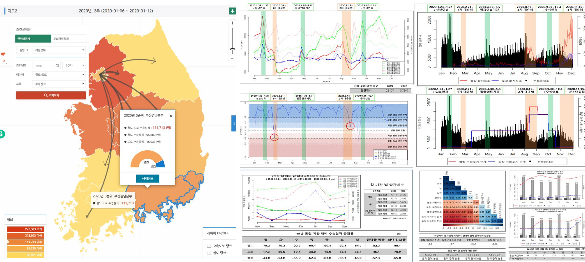

Back to Projects
감염병을 고려한 수송실적 분석 및 타 교통수단과의 대체성 분석
Transportation Performance Analysis and Modal Substitutability under COVID-19
KORAIL · Sep. 2020 – Feb. 2021

Overview
COVID-19 감염병 확산은 철도 수송실적에 직접적인 영향을 미쳤다. 본 과제는 한국철도공사(KORAIL)와 협력하여, 권역별·주요역별 철도-도로 간 수송실적 변화와 대체성을 분석하고, 확진자 추이·거리두기 단계와 승객 수의 상관관계를 시각화하는 의사결정 지원 도구를 개발한다.
My Role
- 역할: 실무책임자(KAIST 석사과정) — 데이터 분석 및 시각화 모듈 담당
- 권역별·주요역별 통계 검색 인터페이스 설계
- 철도-도로 수송실적 상관성 분석 및 매핑 시각화
- 전염병 단계와 승객수 시계열 비교 차트 자동 생성
Methodology
시각화 및 분석 도구를 세 모듈로 구성한다. (1) 조회 인터페이스: 출발/도착 권역, 조회 연도/주차, 데이터(철도-도로), 표출(수송실적/상관계수) 등 검색 조건 입력.(2) 권역기준 교통수단별 교통혼잡도 상관성 분석: 출발·도착 권역 선택 시 대한민국 지도 위에 권역간 이동량을 시각화하고 두 시점(예: 2019 vs 2020)을 병렬 비교.(3) 전염병에 따른 수송실적 분석: 확진자 수·거리두기 단계별 승객 수를 일별·월별 차트로 표현해 정책 효과를 정량적으로 확인.
Results / Key Outcomes
- 웹 기반 권역별/주요역별 수송실적 시각화 도구 완성
- 철도-도로 대체성 정량적 분석으로 정책 의사결정 근거 제공
- 거리두기 단계별 승객 수 패턴 도출 → 향후 감염병 대응 시 참조 자료로 활용